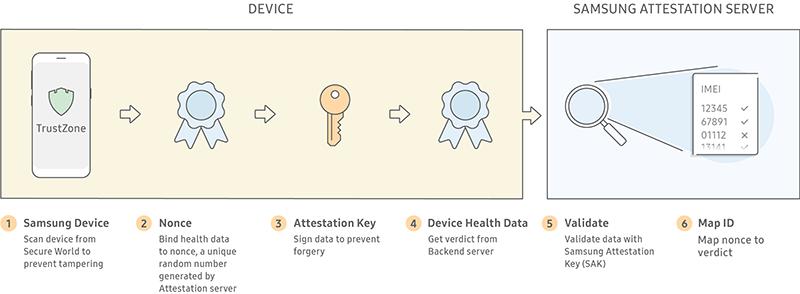
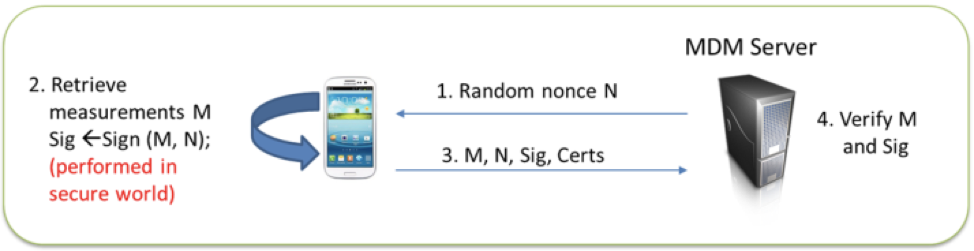
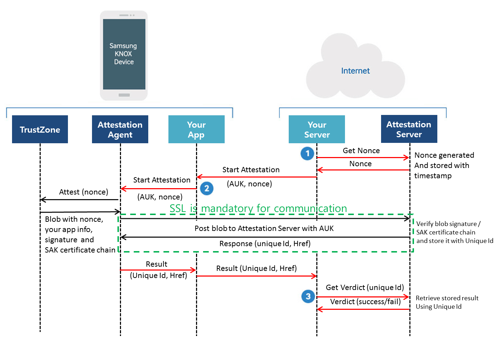

Enhanced Attestation (v3)
Samsung Knox Enhanced Attestation is a feature that verifies a Samsung device’s data integrity by checking that the device isn’t rooted or running unofficial firmware.
Knox 3.4 introduced the latest version of Attestation (v3) running on flagship devices from the Note 10 onwards. Enhanced Attestation uses the EnhancedAttestationPolicy class and v3 REST API. For information about the previous version of Attestation, see Attestation (v2).
About Enhanced Attestation
Samsung Attestation Key
Enhanced Attestation uses the Samsung Attestation Key (SAK) to prove:
- The key is protected by a secure hardware.
- The device is manufactured by Samsung.
- The device ID isn’t compromised.
When verifying devices as Samsung devices, it’s important to note that certificate change alone isn’t enough to prove that a device is a Samsung device since malicious attackers can send a certificate chain generated by other devices.
With SAK, it’s injected during the manufacturing process of a Samsung device to ensure it’s protected by secure hardware. When verifying devices as Samsung devices, the attestation certificate chain is validated, which contains a hash value that includes the device IMEI and serial number. This hash value is embedded as the unique identifier (UID) in the subject field, which is then used to prove the device ID hasn’t been changed after the SAK certificate has been generated.
Enhanced Attestation process
With Knox Enhanced Attestation, device integrity can be validated on-demand by a remote Samsung Attestation server.

When an attestation request is made:
-
The device side Knox Enhanced Attestation agent uses the Keystore attest API to receive an attestation certificate chain paired with an application private key.
-
The attestation certificate chain is used by apps for validation, which consists of:
- The attested key certificate — A certificate of the application key stored and managed in the Keystore.
- The attestation certificate — The certificate of SAK. The attestation key is used to sign the attested key certificate.
- The root certificate — The certificate of the root key issuing the SAK certificate, which is the last component of the attestation certificate chain.
When validating the chain, the root certificate must be obtained through another route since the root certificate is public data. It’s recommended that the root certificate is used as a Trust root or to be compared with the root certificate of the attestation certificate chain.
-
The Knox Warranty Bit value is checked to determine if a device has been rooted.
-
The Knox Enhanced Attestation agent combines proprietary data to produce an attestation verdict, which indicates if tampering is suspected.
The attestation verdict is sent to the requesting web server on the TLS connection between the Samsung Attestation Server and the partner’s web server. This process ensures the attestation verdict is secured during transfer to protect it from being modified.
If device tampering is suspected, security measures may include: uninstalling apps from the device, erasing sensitive data, checking the device location, or simply logging the event for later action.
Signature
For a remote MDM server to verify the integrity and authenticity of an attestation result, the result must be signed by the attestation app inside the device’s TrustZone.
On each device that supports TrustZone-based Integrity Measurement Architecture (TIMA) Attestation, a unique RSA private/public key pair is generated when a device is manufactured. This key pair is the SAK. Note that the public key of SAK is also signed by a special Samsung Root Key to generate a X.509 certificate. SAK and its certificate are secured in the device’s TrustZone.
When the device is booted up for the first time, another RSA private/public key pair is generated specially for the purpose of attestation. This is the Attestation Key. To generate a X.509 certificate, the Attestation Key’s public key is signed by SAK. The Attestation Key and its certificate are secured in the device’s TrustZone.
The chain of trust is formed by the Attestation Key, SAK, and the Samsung Root Key, which is is used to sign the SAK certificate.
After attestation result is generated, it will be signed by Attestation Key and the signature will be appended to the result. To verify the signature, the Attestation Key certificate and SAK certificate are also appended to the result.
Certificate and Verification
When the attestation result is verified by the server, it must have the Samsung Root Key and certificate installed and trusted. Once installed, it’s used to verify the SAK certificate, Attestation certificate, and the signature. This ensures the integrity of the attestation result.
To protect from a replay attack, which replays the attestation result collected on a different device or the same device before it was compromised, TIMA Attestation requires the caller to send a nonce in the request.
The nonce is returned as part of the Attestation result, and the returned nonce is validated by the caller before accepting the result: Below illustrates how a MDM server can request TIMA attestation.

Secure communication
To ensure a secure communication with the Attestation server, use an HTTPS connection and a SSL certificate to encrypt data sent over the connection. Make sure to purchase an SSL certificate from a trusted provider. Self-signed certificates are not trusted by the Attestation server. Also, make sure your certificate contains the complete certificate chain. For help, please consult with your web provider.
How Attestation works
To perform attestation for a device, you must create both:
- An Android app to initiate the attestation check on a device
- A web script to communicate with Samsung’s Attestation server

Here is the end-to-end process:
- Get a nonce: a random value that uniquely identifies each attestation request. Each nonce is valid for a short time period, after which the Attestation Server fails any request made using that nonce. This is to avoid a replay attack that could allow an attacker to reuse a past attestation result.
- Start attestation: To begin the attestation, your app can use
startAttestationAPI in Knox SDK. The Knox Attestation Agent will pass attestation result over callback. Your app needs to handle attestation result (uniqueId). - Get the attestation verdict: a verdict result is received from Attestation Server using a unique Id. The verdict result indicates if a device has passed or failed its integrity checks. Note that the requested nonce and unique Id should be same.
On this page
Is this page helpful?